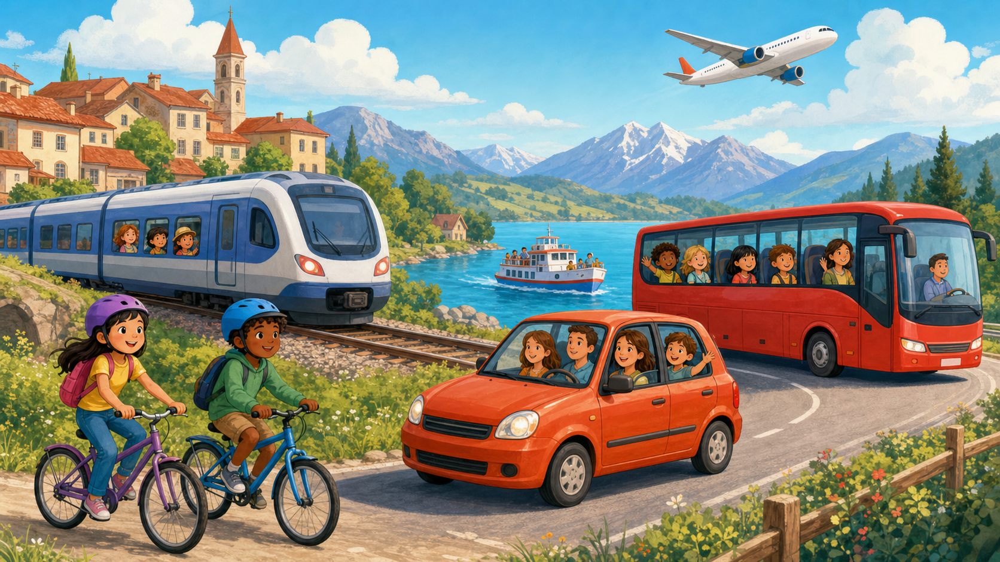

În vacanță
Ce învățăm?
- 12 mijloace de transport și locurile unde le folosim
- Verbe de mișcare: merg, vin, plec, ajung, urc, cobor, zbor
- Formulele „merg cu...”, „merg pe jos” și „plec la...”
- Dialoguri la gară, în autobuz și la aeroport
- Poveste bilingvă, alegeri de vacanță și 9 exerciții interactive

Privește imaginea: Cu ce călătoresc copiii? Unde crezi că merg?
Eu merg cu trenul. · Ich fahre mit dem Zug.
Noi mergem cu mașina. · Wir fahren mit dem Auto.
Tu mergi pe jos. · Du gehst zu Fuß.
Avionul pleacă la ora opt. · Das Flugzeug fliegt um acht Uhr ab.
Trenul ajunge la Brașov. · Der Zug kommt in Brașov an.
Eu urc în autobuz. · Ich steige in den Bus ein.
Eu cobor din tren. · Ich steige aus dem Zug aus.
Planul de vacanță
La gară
În autobuz
La aeroport
Cu bicicleta
Întoarcerea
1. Alege răspunsul corect
Ce mijloc de transport zboară?
Ce înseamnă „Zug”?
Care variantă este corectă?
2. Potrivește cuvintele
3. Potrivește verbul cu situația
4. Construiește propoziția
Construiește: „Wir fahren mit dem Zug ans Meer.”
5. Completează cu verbul potrivit
6. Cu, în, din sau pe?
7. Înțelege povestea
Unde merge Luca?
Cu ce merge familia până la Constanța?
Cum se întoarce familia acasă?
8. Alege traducerea potrivită
Ich steige in den Bus ein.
Der Zug kommt um zehn Uhr an.
9. Vorbește despre vacanța ta
Alege variantele și spune propoziția cu voce tare:
În vacanță merg... la mare / la munte / în oraș / la țară.
Eu călătoresc... cu trenul / cu mașina / cu avionul / cu bicicleta.
Acolo... merg pe jos / mă plimb / urc pe munte / merg cu vaporul.
Mă întorc... vineri / sâmbătă / duminică.